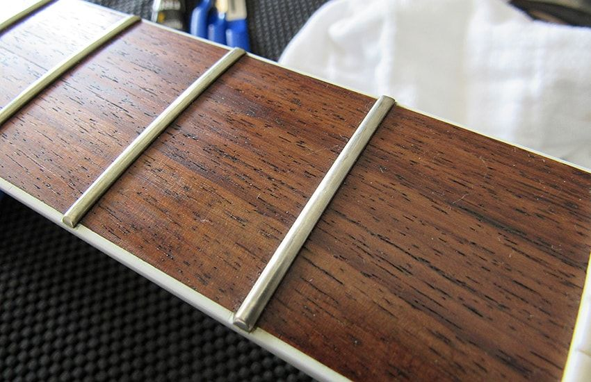
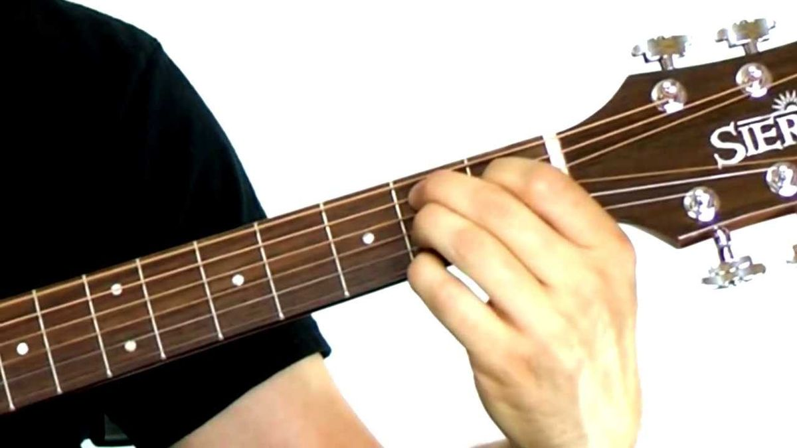
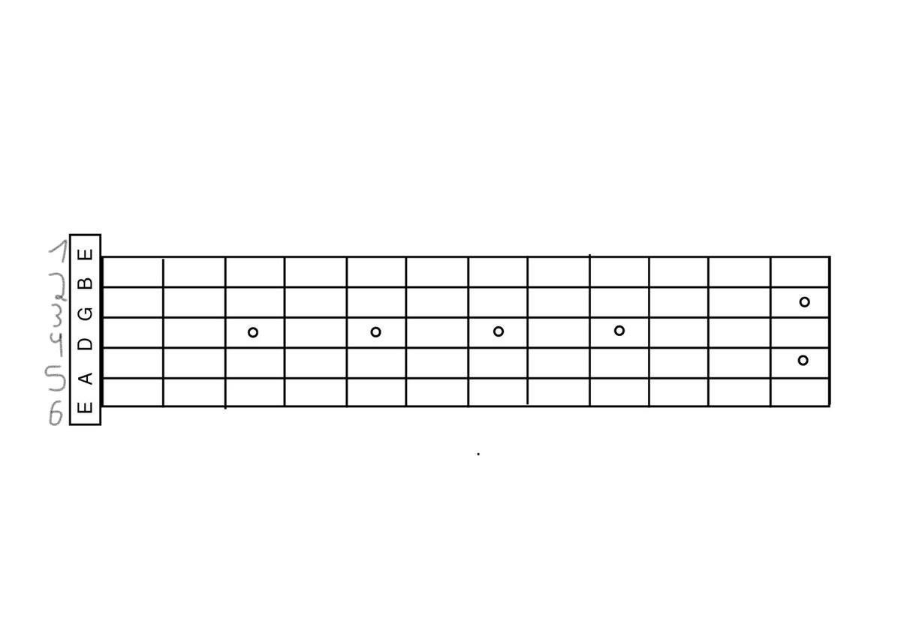

מיתרי הגיטרה (srings):
לסוג הבסיסי של הגיטרה קיימים 6 מיתרים. נוהגים לקרוא להם בשמות E,A,D,G,B,E או במספרים 1-6, כאשר מספר 1 הוא המיתר הגבוה והדק ביותר, ומיתר 6 הוא המיתר העמוק והעבה. ישנם גיטרות מיוחדות בעלות כמות אחרות של מיתרים, לדוגמא גיטרת בס שבעלת 4 מיתרים.

סריגי הגיטרה (frets):
צוואר הגיטרה מחולק לחלקים בעזרת פסים מתכתיים. כל חלק כזה נקרא "סריג" והוא ממוספר מהמספרים - 0 עד כמות המקסימלית של הסריגים שיש על הגיטרה, בדרך כלל מספר זה מגיע עד ל24. (סריג 0 הוא הסריג "הפתוח", כלומר כאשר לא נלחץ אף אחד מהסריגים.
טאבים (tabs):
בעזרת טאבים אפשר "לקרוא" מוזיקה, טאבים הינם מספרים הנחים על מיתרים על דף, כלומר דף בעזרתו ניתן ללמוד מוזיקה. על דפים כאלה אפשר ללמוד מנגינות ואקורדים. הטאבים בנויים בצורה פשוטה: המספר שנח על המיתר זה הסריג עליו צריך להניח את האצבע (אם הסריג הוא אפס לא צריך להניח אצבע) וכמובן המיתר אותו פורטים. את הטאבים קוראים מצד שמאל לימין.
דוגמא לטאבים
בחזרה לדף הבית
אקורדים
אָקוֹרְד (באנגלית: Chord, בעברית: תַּצְלִיל[1]) הוא צירוף של שלושה צלילים או יותר המנוגנים יחד. מספר אקורדים ברצף היוצרים מתח והרפיה נקראים "מהלך הרמוני".


עוד על אקורדים